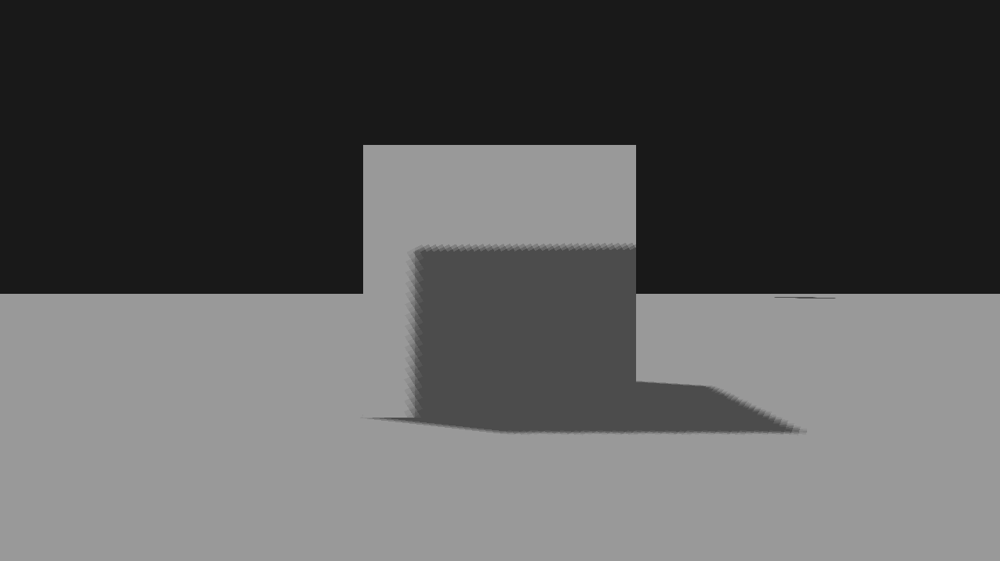
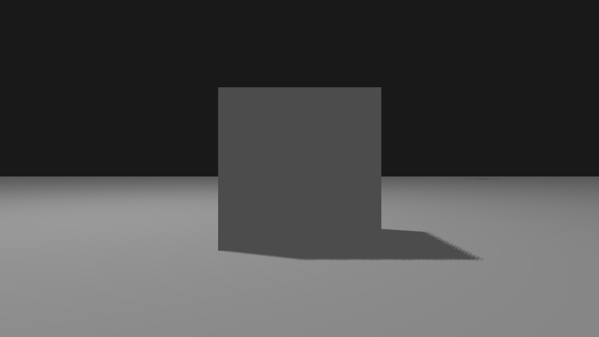
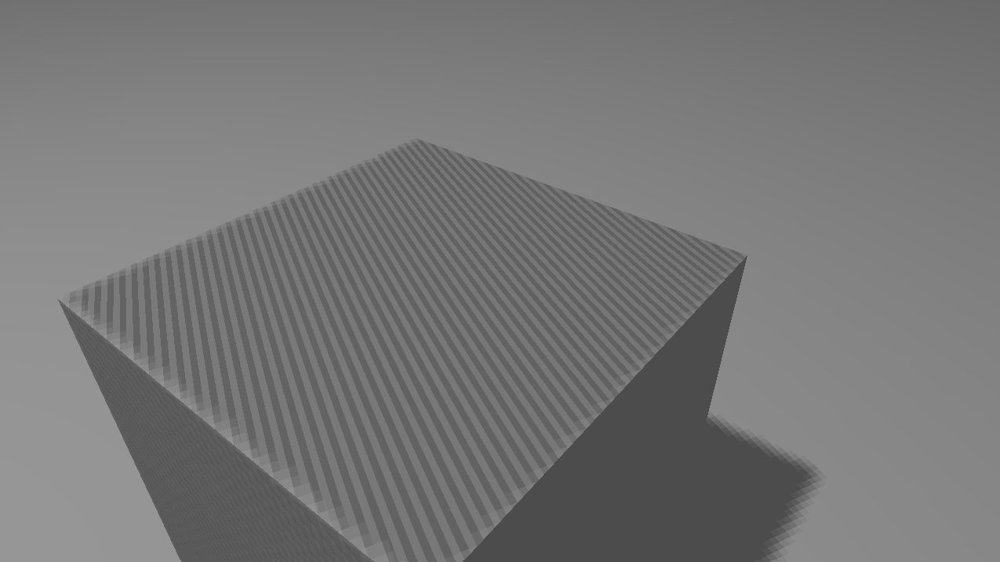
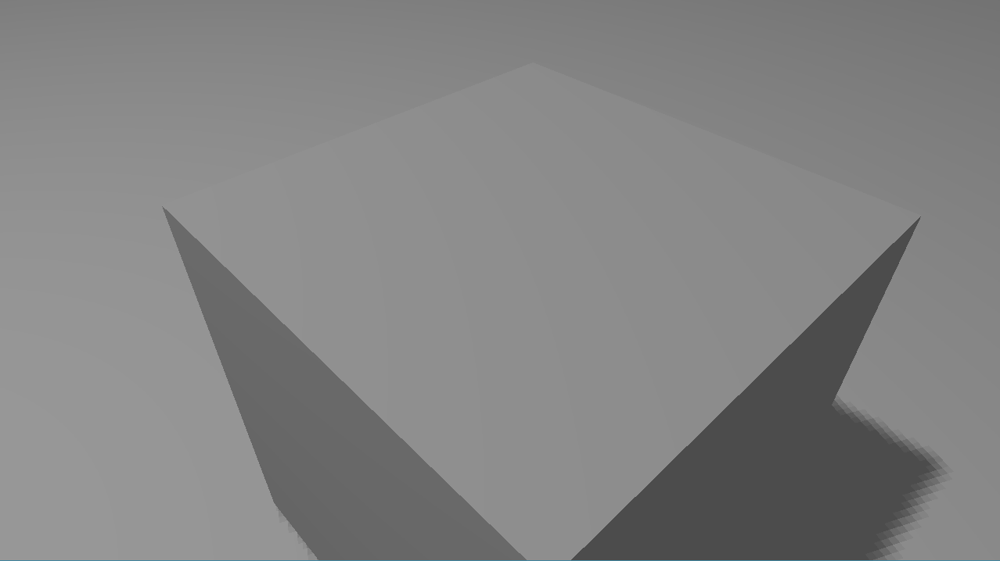
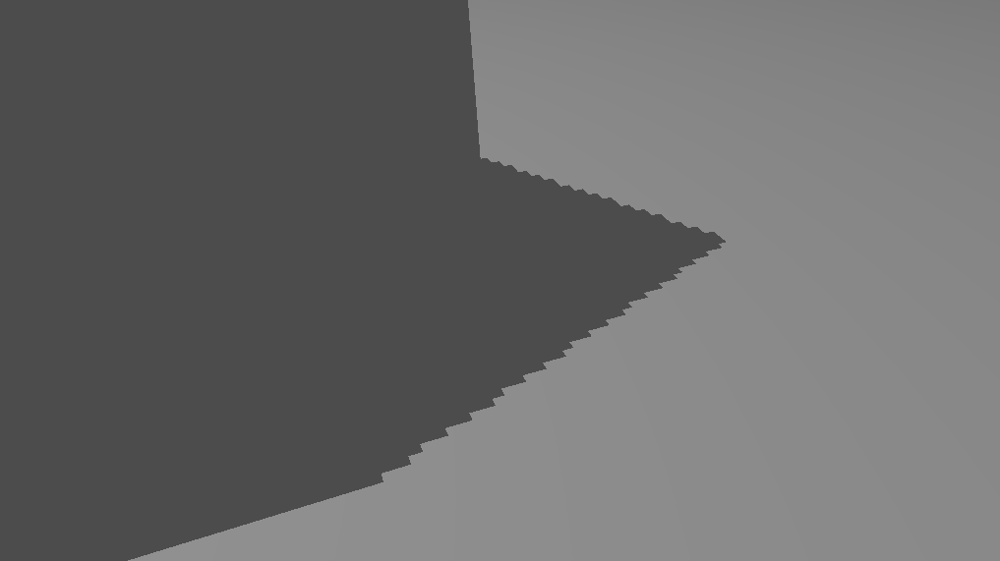
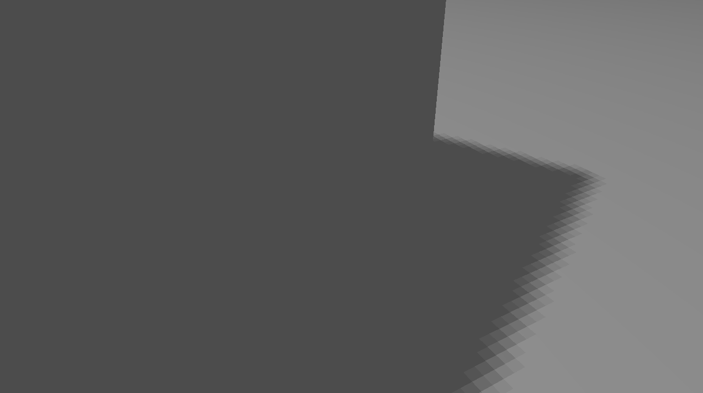

The idea behind shadow mapping is quite simple: we render the scene from the light's point of view and everything we see from the light's perspective is lit and everything we can't see must be in shadow. This concept was introduced by Lance Williams in 1978, in a paper entitled "Casting curved shadows on curved surfaces." Shadows are created by testing whether a pixel is visible from the light source, by comparing the pixel to a z-buffer or depth image of the light source's view, stored in the form of a texture.
Rendering a shadowed scene involves two major drawing steps. The first produces the shadow map itself, and the second applies it to the scene. Depending on the implementation (and number of lights), this may require two or more drawing passes.
Rendering a df
SHADOWS OF DIFFERENT OBJECTS
Problem: With just ambient lighting we get weird shadows on the object where they should not be because that parts of the object is not visible by the light and the z buffer value suggests that there is a shadow. It does not make sense for fragments facing away from the light to receive shadows
Solution: With diffuse lighting we can force these fragments to not receive shadows. Diffuse lighting depends on the cross product of light direction and normal of fragments
cube with just ambient lighting
cube with diffuse and ambient lighting
Problem: There will be a stripe pattern on objects called shadow acne because the shadow map is limited by resolution, multiple fragments can sample the same value from the depth map when they're relatively far away from the light source. Several fragments then access the same depth texel where we get a shadow discrepancy. Because of this, some fragments are considered to be in shadow and some are not, giving the striped pattern.
Solution: We introduce a small a small bias and subtract it from depth value to prevent this from happening.
shadow acne
shadow acne removed with little bias
Problem: We get jaggy edges because the depth map has a fixed resolution, the depth frequently usually spans more than one fragment per texel. As a result, multiple fragments sample the same depth value from the depth map and come to the same shadow conclusions, which produces these jagged blocky edges.
Solution: We can reduce these blocky shadows by increasing the depth map resolution, or by filtering. percentage-closer filtering, which is a term that hosts many different filtering functions that produce softer shadows, making them appear less blocky or hard. The idea is to sample more than once from the depth map, each time with slightly different texture coordinates. For each individual sample we check whether it is in shadow or not. All the sub-results are then combined and averaged and we get a nice soft looking shadow.
without filtering
with filtering
Dynamic Objects Static Lights
Dynamic Lights Static Objects